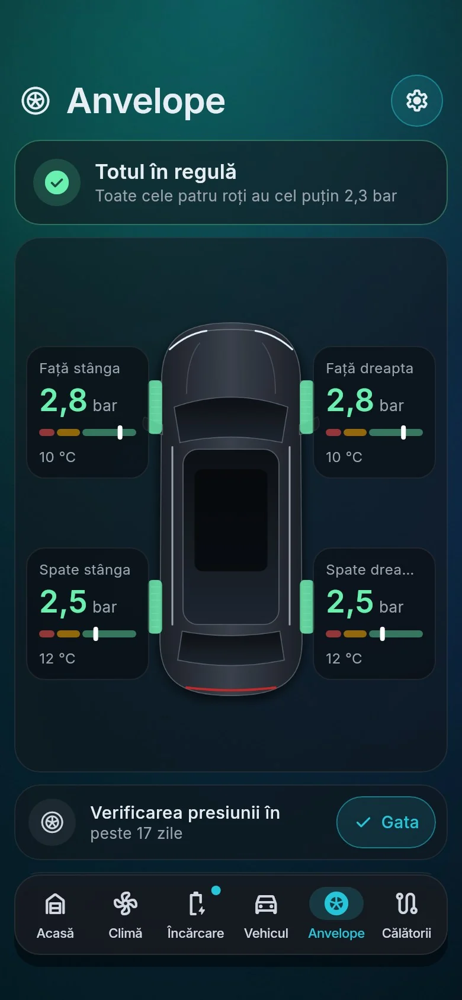
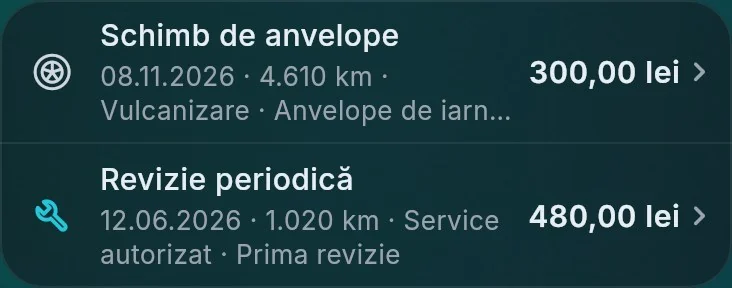

Toate funcțiile
Anvelope, service, documente
Nimic legat de mașina ta nu scapă.
Presiunea din anvelope, următorul service, rovinieta, ITP-ul și asigurarea – Carmeo ține minte datele și îți amintește la timp.


Presiunea din anvelope, roată cu roată.
Presiune și temperatură pentru fiecare anvelopă, cu avertizare sub limitele setate de tine. Un memento periodic îți spune când e timpul să le verifici la pompă.


Următorul service – după kilometri sau după dată.
Carmeo numără invers până la următorul service, oricare vine primul. Jurnalul de service păstrează fiecare revizie, schimb de anvelope și reparație, cu costul ei, și îl exportă ca CSV sau PDF când vinzi mașina.

Documente și termene.
Rovinietă, asigurare, ITP: adaugi o dată data expirării, vezi zilele rămase și primești un memento înainte să expire.
Încearc-o pe mașina ta.
Carmeo este gratuit. Intră în grupul de testare deschisă pe iPhone sau Android.